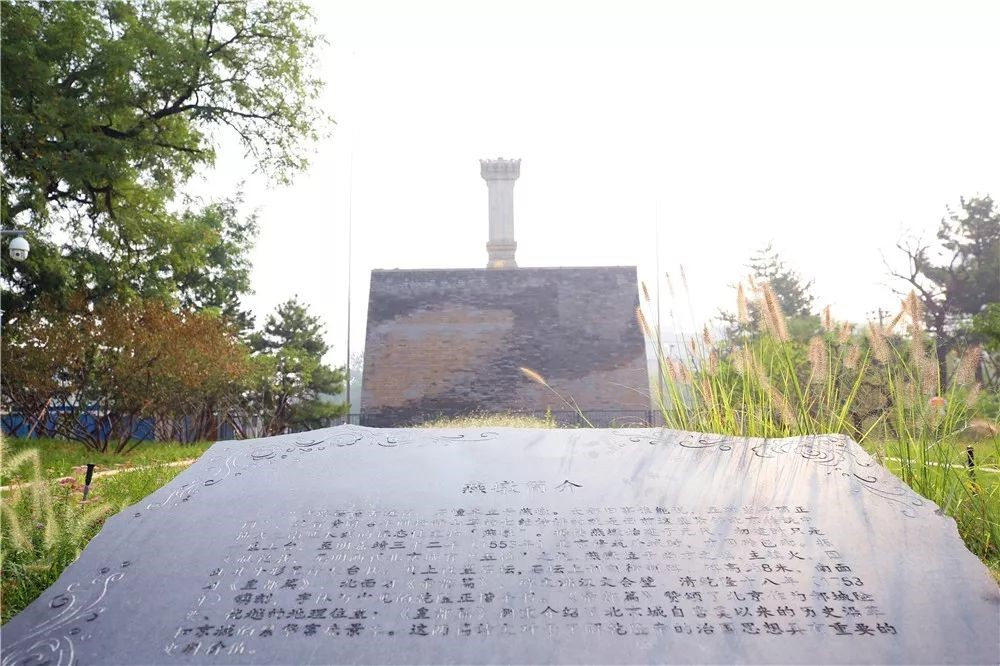
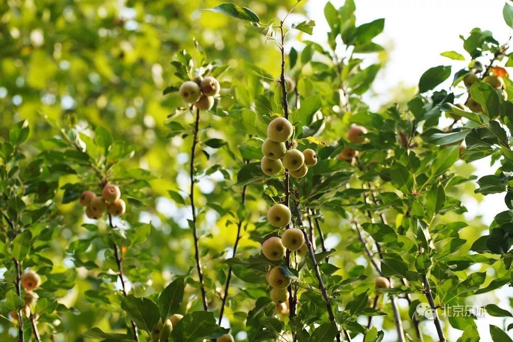

又一城市公园来了！这回在南、北二环
来源：北京东城
今天（9月9日），位于南二环外侧，总面积1.9万平方米的燕墩公园正式开园。这处居民家门口的大尺度公园，以“城市森林+”为建设理念，挖掘“燕墩”文物特点，为居民打造了一处休闲功能与文化特色兼顾的绿色生态空间。

乡土树种超过七成
走进燕墩公园，高大的乔木和品种多样的灌木为公园披上了“绿装”。
据区园林绿化局副局长褚玉红介绍，该公园在植物配置上，乡土树种占70%左右，地被植物覆盖面积达78%。此外，还种植了银红槭、鸡爪槭等新优品种植物和山桃、石榴、丁香等浆果类、蜜源类植物品种，为公园增加丰富配色的同时也增添了趣味性。

全园共栽植乔木30余品种，约1000余株；灌木10余种，约200余株，地被植物43种，面积约1.5万平方米。
公园建设注重休闲功能
记者发现，与其它城市公园不同，燕墩公园内有一条全长约1.2公里的林下蜿蜒漫步道和全长约800米的直线漫步道，步道的两侧分布着儿童活动场地、健身场地等多处活动空间。
褚玉红介绍，该公园以城市森林为建设原则，考虑周边百姓需求，注重休闲功能建设。园内充分利用公园狭长地块的优势，将公园甬路与西侧绿地贯通，形成了林下蜿蜒漫步道。同时，还利用铁路防护路，设置了与西侧绿地连接的直线漫步道。多种活动空间的建设，基本满足了附近居民日常户外活动的需求，弥补了京津城际铁路南侧优质户外活动空间不足的缺欠。
此外，园内还选用透水铺装材料铺装近2000平方米，在园路两侧设置植被浅沟，共约670平方米，可以帮助雨水快速下渗，最大限度实现园内雨水回灌地下水源。
发挥地理优势打造文化公园
记者还注意到，步道两旁的路边还立着几块指示牌，标明了园内活动空间的方向和距离，还印着“燕”字小篆和“燕墩”的剪影。在休憩广场上，还有一块雕刻着“燕墩”文物建筑特点和历史沿革的牌示雕塑，吸引了不少居民阅读。

公园东侧紧邻“燕墩”文化遗址，是北京传统中轴线之南延长线的标志性文物。据传，燕墩始建于元代，其上刊刻御制碑，碑文赞美了北京险要的地理形势、国泰民安的情景，堪称北京的史记篇。随着城市的发展，这座文物鲜被提及。


褚玉红介绍，该公园建设时挖掘“燕墩”文物特点，通过一系列文化景观建设，使人们在公园漫步休闲的同时，了解北京“燕墩”文物遗址的历史文化。.
家住附近百荣嘉园的居民顾淑明在这里生活了30多年，她高兴地说：“以前我们去陶然亭公园或天坛公园，步行单程就要20多分钟，如今，10分钟左右就能走到这里，风景好，还是拍照的好地方。之前我们只知道这里有个‘燕墩’，今天看了碑文才知道原来它有这么悠久的历史，以后我要常带我的小外孙过来看看。”
雨水花园、昆虫旅馆、木桩广场

人工鸟巢，野花野草、乔灌木自然混杂
……

二环边上，也能逛森林公园啦！
9月3日上午，安德城市森林公园建成开放，面积1.6万平方米。这是继新中街城市森林公园后，东城区建成的第二处城市森林公园，向南与环二环滨河绿道无缝衔接，直接提升了北中轴线绿化景观水平，为周边居民提供了高品质的休闲健身场所。
公园共有6个入口，北侧、西侧、南侧有三个主入口。

步入公园，红色铺装的园路两侧种植高大乔木如银红槭、国槐，灌木有石榴、金银木，地被有委陵菜、崂峪苔草等，层次丰富。绿地中，绣球、醉蝶、松果菊、紫菀、荷兰菊，马鞭草、狼尾草等野花野草，山野情趣满溢。


“公园建设坚持‘生态为主、以人为本’，采取混交、复层的种植手法，结合西侧、北侧行道树是千头椿和国槐的特点，公园内的大树种植，选取了国槐、栾树、元宝枫等，异种异龄，呈现乔木的丰富性。”东城区园林绿化局副局长褚玉红介绍。

公园北门进去是一处雨水花园，朱红漆木栈道飞架，桥下鹅卵石铺出河道池塘的景观，岸边有小鸭子等雕塑，还建有小木房昆虫旅馆，显得自然生态、生机盎然。

靠近公园东侧，还有儿童活动区，设有沙坑，大颗粒的砂石可以避免眯了小朋友的眼睛，还能体验玩沙的乐趣。


更有童趣、更生态的是，儿童活动区周围的大树上，还做了30个人工鸟窝，吸引鸟儿来安家，陪伴孩子们成长。

从儿童活动区往北，一条木桩铺设的步道蜿蜒向远方，与之相连的是木桩广场。这里林荫覆盖，可以在广场上唱歌跳舞。地上的铺装松软舒适，原来，是用园林废弃物如修剪下的树枝等，粉碎后铺到地面上，既环保，还能优化游客体验。


公园里，还有几处昆虫旅馆，用原木、麻绳、草片搭成。


公园里还种植了很多蜜源植物，吸引蜜蜂等，丰富物种多样性。


据了解，公园所在地块，原状是出租房屋、工人管理用房。项目对其进行拆除，腾出土地7000平方米。场地条件并不理想，南侧有个4000平方米的变电站，还有3000平方米的水井院。


公园建设过程中，拆除变电站周边围挡，只留设施，将变电站围合在公园绿地中间，穿过绿地，从南入口出去，无缝衔接滨河环二环城市绿道。


68岁的和平里街道西河沿社区居民韩俊玉，在附近住了近20年。“以前路边全都是小饭馆、出租屋，有10多年。我们逛公园，都去青年湖、地坛，远点，不像这个，这个5分钟就到。喷雾特凉爽，满地小花都不光是草，太好看了！有这个公园还用去远处嘛！”韩俊玉说。